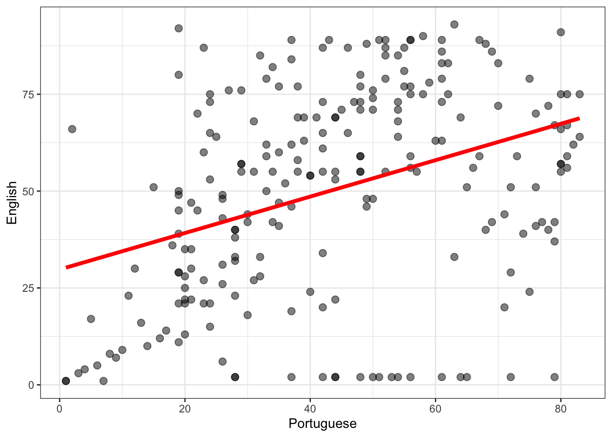
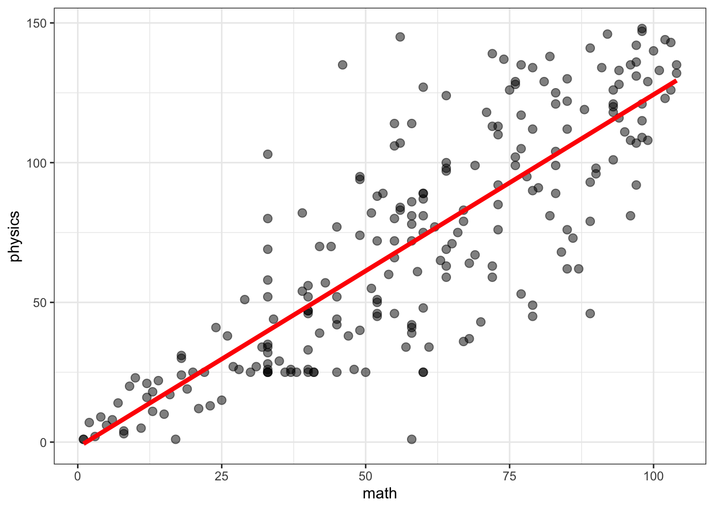
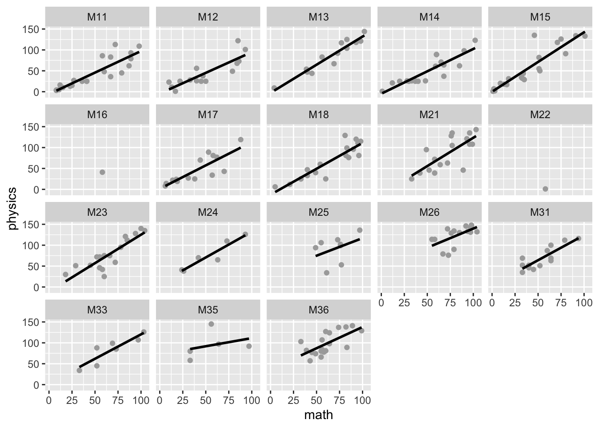
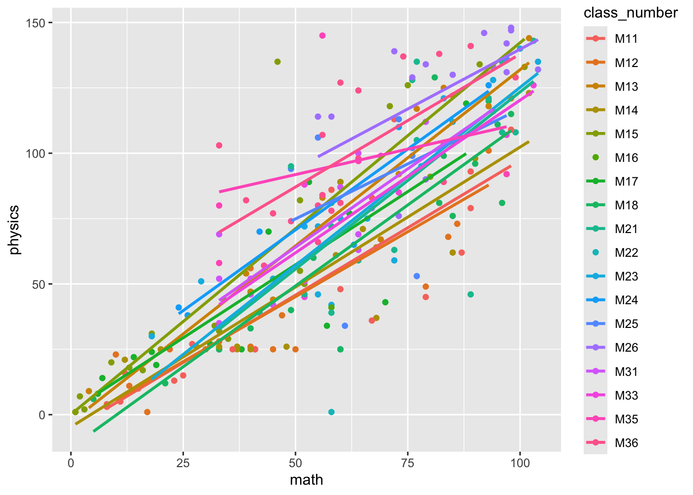

Welcome to your overview of the work we will do together in Week 16.
We are going to learn about a method or approach that is essential in modern data analysis: multilevel modeling.
We are going to invest the next few weeks in working on this approach.
We are going to do this because multilevel modeling is a very powerful and very flexible technique, and because you will learn best if you take the time to build up and deepen your understanding step-by-step.
Targets
Our learning objectives include the development of key concepts and skills.
concepts – how data can have multilevel structures and what this requires in models
skills – where skills comprise the capacity to:
use visualization to examine observations within groups
run linear models over all data and within each class
use the lmer() function to fit models of multilevel data
We are just getting started this week. Our plan will be to build depth and breadth in understanding as we progress over the next few weeks.
Learning resources
You will see, next, the lectures we share to explain the concepts you will learn about, and the practical data analysis skills you will develop. Then you will see information about the practical materials you can use to build and practise your skills.
Every week, you will learn best if you first watch the lectures then do the practical exercises.
Linked resources
To help your learning, you can read about the ideas and the practical coding required for analyses in the chapters I wrote for this course.
The lecture materials for this week are presented in three short parts.
Click on a link and your browser should open a tab showing the Panopto video for the lecture part.
Part 1 (17 minutes) Multilevel data: What do we mean when we talk about multilevel structured data and why it matters.
Part 2 (13 minutes): Getting started in learning, working with an example from education, children clustered in classes, analyzing data using linear models, seeing the differences between different classes.
Part 3 (13 minutes): Doing multilevel models in practice, coding models using lmer(), a first look at analysis results.
Lecture slides
Download the lecture slides
The slides presented in the videos can be downloaded here:
The high resolution version is the version delivered for the lecture recordings. Because the images are produced to be high resolution, the file size is quite big (4 MB) so, to make the slides easier to download, I produced low resolution versions: 1pp and 6pp. These should be easier to download and print out if that is what you want to do.
Practical materials: data and R-Studio
We will be working with data taken from a study on education outcomes in Brazilian children, reported by Golino & Gomes (2014).
Get the data: get the data file and the .R script you can use to do the exercises that will support your learning.
You can download the files folder for this chapter by clicking on the link 01-multilevel.zip.
The practical materials folder includes:
BAFACALO_DATASET.RData
402-01-multilevel-workbook.R the workbook you can use to do the practical exercises.
The data file is in the .RData format: .RData is R’s own file format so the code you use to load and access the data for analysis is a bit simpler than you are used to, as we will see.
We use the {dplyr} function select() to pick just the variables needed.
We create a new data-set (call it what you like), from the original, to hold just the selection of variables we want to use in the analysis steps, following.
Pract.Q.1. Do you know what you are doing with select()? Can you select a different set of variables?
Pract.A.1. You can exercise your skill by checking that you can view the BAFACALO_DATASET and select any variable you like. Be careful and make sure you go back to select the variables shown in the given code chunk: we will need them later.
Practical Task 4 – Take missing values out of the brazil data
There are several rows in the data-set with missing values. You need to remove these from the data before you get started with any calculations.
Code
brazil <-na.omit(brazil)
What have you got?
You should always check the results of a tidying operation, to make sure that what you have got matches what you expected to get.
class_number participant_id portuguese english math
M11 : 21 3 : 1 Min. : 1.00 Min. : 1.00 Min. : 1.00
M15 : 20 4 : 1 1st Qu.:26.25 1st Qu.:29.00 1st Qu.: 39.00
M14 : 19 5 : 1 Median :42.00 Median :55.00 Median : 58.00
M36 : 19 6 : 1 Mean :43.55 Mean :50.25 Mean : 58.17
M18 : 18 7 : 1 3rd Qu.:58.75 3rd Qu.:73.00 3rd Qu.: 79.75
M21 : 17 9 : 1 Max. :83.00 Max. :93.00 Max. :104.00
(Other):116 (Other):224
physics
Min. : 1.00
1st Qu.: 34.00
Median : 71.50
Mean : 71.57
3rd Qu.:107.75
Max. :148.00
Pract.Q.3. Do you see the difference between the summary of the brazil data shown before and after you run as.numeric() or as.factor() function lines? What is it?
Pract.A.3. You should see that numeric variables like portuguese are listed with summary statistics like the mean after but not before you coerce the variables.
Practical Task 6 – Exercise – experiment with coercion
Test out variable type using the is...() function for some of the variables
Test out coercion – and its results – using the as...() function for some of the variables
Look at the results using summary()
Practical Part 4: Visualize the relationship
Here, we are interested in the relationship between school grades, for the sample of Brazilian children for whom we have data.
What is the relationship between portuguese and english grades?
Practical Task 7 – Visualize the relationship between portuguese and english grades using a scatterplot
This should be a revision exercise for you.
Do you notice any changes in the way in which the plotting code is laid out?
Code
brazil %>%ggplot(aes(x = portuguese, y = english)) +geom_point(colour ="black", size =2.5, alpha = .5) +geom_smooth(method ="lm", size =1.5, se =FALSE, colour ="red") +xlab("Portuguese") +ylab("English") +theme_bw()
Warning: Using `size` aesthetic for lines was deprecated in ggplot2 3.4.0.
ℹ Please use `linewidth` instead.
`geom_smooth()` using formula = 'y ~ x'

Practical Task 8 – Exercise – edit plots
Change the x and y variables to math and physics
Change the theme from theme_bw() to something different
Change the appearance of the points, try different colour, shape, size
Hint
Use the ggplot reference documentation to help you make choices:
You should be using webpages like the reference page often in your work.
Practical Part 5: Visualize the relationship
We move next to analyzing the relationship between variation in grades in different subjects, across the children in our sample.
Practical Task 9 – Analyze the relationship between english and portuguese grades in the brazil data
You should be able to reproduce the results shown in the slides and the book chapter.
Code
summary(lm(english ~ portuguese, data = brazil))
Call:
lm(formula = english ~ portuguese, data = brazil)
Residuals:
Min 1Q Median 3Q Max
-64.909 -17.573 2.782 20.042 53.292
Coefficients:
Estimate Std. Error t value Pr(>|t|)
(Intercept) 29.77780 3.81426 7.807 2.11e-13 ***
portuguese 0.47001 0.07897 5.952 9.91e-09 ***
---
Signif. codes: 0 '***' 0.001 '**' 0.01 '*' 0.05 '.' 0.1 ' ' 1
Residual standard error: 25.02 on 228 degrees of freedom
Multiple R-squared: 0.1345, Adjusted R-squared: 0.1307
F-statistic: 35.43 on 1 and 228 DF, p-value: 9.906e-09
Practical Task 10 – Exercise – adapt the lm() code to do a different analysis
Change the outcome and predictor variables to math and physics.
Code
summary(lm(physics ~ math, data = brazil))
Call:
lm(formula = physics ~ math, data = brazil)
Residuals:
Min 1Q Median 3Q Max
-70.360 -14.265 0.437 14.797 78.784
Coefficients:
Estimate Std. Error t value Pr(>|t|)
(Intercept) -1.83703 3.71858 -0.494 0.622
math 1.26202 0.05795 21.777 <2e-16 ***
---
Signif. codes: 0 '***' 0.001 '**' 0.01 '*' 0.05 '.' 0.1 ' ' 1
Residual standard error: 23.81 on 228 degrees of freedom
Multiple R-squared: 0.6753, Adjusted R-squared: 0.6739
F-statistic: 474.2 on 1 and 228 DF, p-value: < 2.2e-16
Pract.Q.4. What is the estimated coefficient of the “effect” of math ability (grade) on physics grade?
Pract.A.4. The summary shows that physics grades are on average 1.3 higher for unit increase in math grade.
Pract.Q.5. Draw a scatterplot showing the relationship between math and physics grades. Does the trend you see in the plot reflect the coefficient you see in the linear model summary?
Pract.A.5. The plot shows the positive association between math and physics grade also indicated by the estimated coefficient of the math effect.
Code
brazil %>%ggplot(aes(x = math, y = physics)) +geom_point(colour ="black", size =2.5, alpha = .5) +geom_smooth(method ="lm", size =1.5, se =FALSE, colour ="red") +theme_bw()
`geom_smooth()` using formula = 'y ~ x'

Pract.Q.6. How does the strength of the math-physics relationship compare with the english-portuguese relationship?
Pract.A.6. Both the linear model and the plots indicate that the math-physics relationship is much stronger.
Practical Part 6: Visualize the relationship for each class
Practical Task 11 – Plot the relationship between english and portuguese grades separately for each class using facet_wrap()
Practical Task 12 – Exercises to practice your facet_wrap() skills
Change the x and y variables to math and physics and draw a facetted scatterplot again
Experiment with showing the differences between classes in a different way: instead of using facet_wrap(), in aes() add colour = class_number, and remove colour from geom_point and geom_smooth
Code
ggplot(data = brazil, aes(x = math, y = physics)) +geom_point(colour ="darkgrey") +geom_smooth(method ="lm", se =FALSE, colour ="black") +facet_wrap(~ class_number)
`geom_smooth()` using formula = 'y ~ x'

ggplot(data = brazil, aes(x = math, y = physics, colour = class_number)) +geom_point() +geom_smooth(method ="lm", se =FALSE)
`geom_smooth()` using formula = 'y ~ x'

Pract.Q.8. Evaluate the consistency between classes of the relationship between math and physics grades: what do the plots show? how does this compare with what you see of the relationship between english and portuguese grades?
Pract.A.8. The plots show that the relationship between math and physics is very consistent between classes, and more consistent than the relationship between english and portuguese grades appears to be.
Practical Part 7: Mixed-effects analysis
Practical Task 13 – Run a linear mixed-effects analysis of the relationship between english and portuguese grades using lmer()
You should be able to replicate the results shown in the slides and the book chapter.
Linear mixed model fit by REML ['lmerMod']
Formula: english ~ portuguese + (portuguese + 1 | class_number)
Data: brazil
REML criterion at convergence: 2104.3
Scaled residuals:
Min 1Q Median 3Q Max
-2.81321 -0.59584 0.04359 0.60018 2.23722
Random effects:
Groups Name Variance Std.Dev. Corr
class_number (Intercept) 341.4803 18.479
portuguese 0.3295 0.574 -0.98
Residual 493.1009 22.206
Number of obs: 230, groups: class_number, 18
Fixed effects:
Estimate Std. Error t value
(Intercept) 25.2837 6.2669 4.034
portuguese 0.6590 0.1729 3.811
Correlation of Fixed Effects:
(Intr)
portuguese -0.943
Practical Task 14 - Exercise mixed-effects model coding
Vary the random effects part of the model, while keeping this bit the same: lmer(english ~ portuguese + ...)
Change the random effect from (portuguese + 1 | class_number) to (1 | class_number): what you are doing is asking R to ignore the differences in the slope of the effect of Portuguese grades.
Change the random effect from (portuguese + 1 | class_number) to (portuguese + 0 | class_number): what you are doing is asking R to ignore the differences in the intercept
Linear mixed model fit by REML ['lmerMod']
Formula: english ~ portuguese + (portuguese + 1 | class_number)
Data: brazil
REML criterion at convergence: 2104.3
Scaled residuals:
Min 1Q Median 3Q Max
-2.81321 -0.59584 0.04359 0.60018 2.23722
Random effects:
Groups Name Variance Std.Dev. Corr
class_number (Intercept) 341.4803 18.479
portuguese 0.3295 0.574 -0.98
Residual 493.1009 22.206
Number of obs: 230, groups: class_number, 18
Fixed effects:
Estimate Std. Error t value
(Intercept) 25.2837 6.2669 4.034
portuguese 0.6590 0.1729 3.811
Correlation of Fixed Effects:
(Intr)
portuguese -0.943
Linear mixed model fit by REML ['lmerMod']
Formula: english ~ portuguese + (1 | class_number)
Data: brazil
REML criterion at convergence: 2129.2
Scaled residuals:
Min 1Q Median 3Q Max
-2.55966 -0.68483 0.08471 0.77210 2.51034
Random effects:
Groups Name Variance Std.Dev.
class_number (Intercept) 47.59 6.899
Residual 588.91 24.267
Number of obs: 230, groups: class_number, 18
Fixed effects:
Estimate Std. Error t value
(Intercept) 26.02493 4.60799 5.648
portuguese 0.55060 0.08995 6.121
Correlation of Fixed Effects:
(Intr)
portuguese -0.856
Warning in checkConv(attr(opt, "derivs"), opt$par, ctrl = control$checkConv, :
Model failed to converge with max|grad| = 0.00236563 (tol = 0.002, component 1)
summary(porto.lmer3)
Linear mixed model fit by REML ['lmerMod']
Formula: english ~ portuguese + (portuguese + 0 | class_number)
Data: brazil
REML criterion at convergence: 2116.1
Scaled residuals:
Min 1Q Median 3Q Max
-2.74726 -0.65271 0.03263 0.64709 2.71650
Random effects:
Groups Name Variance Std.Dev.
class_number portuguese 0.053 0.2302
Residual 535.157 23.1335
Number of obs: 230, groups: class_number, 18
Fixed effects:
Estimate Std. Error t value
(Intercept) 22.0168 4.0359 5.455
portuguese 0.6813 0.1087 6.266
Correlation of Fixed Effects:
(Intr)
portuguese -0.778
optimizer (nloptwrap) convergence code: 0 (OK)
Model failed to converge with max|grad| = 0.00236563 (tol = 0.002, component 1)
Pract.Q.9. Compare the results of the different versions of the model. Can you identify where the results are different?
Pract.A.9. It can be seen that Rhe estimated effect of portuguese varies between the models but the estimate is more similar, around .65, where the random effect is specified as (portuguese + 1|class_number) or (portuguese + 0|class_number). The residual variance term is different between the models. Which random effects variances are shown is also different. There is a convergence warning for:
english ~ portuguese + (portuguese + 0 | class_number)
Practical Task 15 - Exercise mixed-effects model coding
Change the outcome (from english) and the predictor (from portuguese) – this is about changing the fixed effect part of the model.
Note that you will need to change the random effect part as well.
Code
porto.lmer1 <-lmer(physics ~ math + (math +1|class_number),data = brazil)
boundary (singular) fit: see help('isSingular')
summary(porto.lmer1)
Linear mixed model fit by REML ['lmerMod']
Formula: physics ~ math + (math + 1 | class_number)
Data: brazil
REML criterion at convergence: 2066
Scaled residuals:
Min 1Q Median 3Q Max
-2.9688 -0.5956 0.0461 0.6276 3.4865
Random effects:
Groups Name Variance Std.Dev. Corr
class_number (Intercept) 8.827e+01 9.39523
math 3.892e-03 0.06238 1.00
Residual 4.118e+02 20.29397
Number of obs: 230, groups: class_number, 18
Fixed effects:
Estimate Std. Error t value
(Intercept) 1.46514 4.10294 0.357
math 1.19196 0.05564 21.423
Correlation of Fixed Effects:
(Intr)
math -0.570
optimizer (nloptwrap) convergence code: 0 (OK)
boundary (singular) fit: see help('isSingular')
Pract.Q.10. What elements of the model summary stand out for you? It will help to see what you should notice if you compare the math-physics model with the first english-portuguese model.
Pract.A.10. You may notice that:
The summary comes with a fit is singular? warning.
The variance terms for intercept or the math effect by class number and the residual are very very small: much smaller than for the english-portuguese model.
Practical Part 8: Extension
Practical Task Optional
In the lecture materials, I display a plot showing the estimated intercept and coefficient for each class, estimated using separate models for different classes.
Some of you may be interested in how I did that, you can run the following code to see.
Use the {dplyr}%>% syntax to run a model for each class separately, collect together the results into a dataframe.
Code
brazlm <- brazil %>%group_by(class_number) %>%do(tidy(lm(english ~ portuguese, data=.)))brazlm$term <-as.factor(brazlm$term)
Extract the per-class estimates of the intercepts and the ‘portuguese’ effect coefficient estimates.
Code
brazlmint <-filter(brazlm, term =='(Intercept)')brazlmport <-filter(brazlm, term =='portuguese')
Golino, H., & Gomes, C. (2014). Psychology data from the “BAFACALO project: The Brazilian Intelligence Battery based on two state-of-the-art models Carroll’s Model and the CHC model”. Journal of Open Psychology Data, 2(1), e6. https://doi.org/10.5334/jopd.af